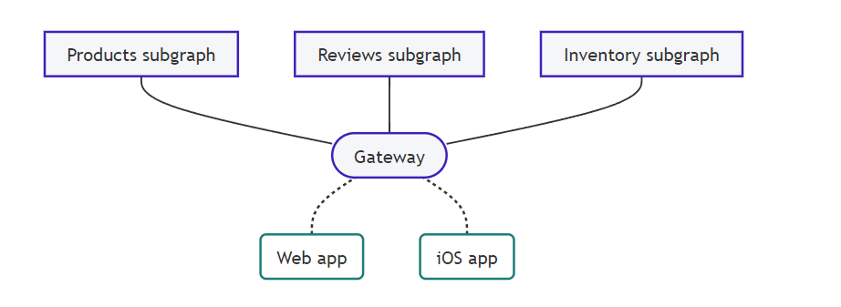

GraphQL
Writting backendsWhat we won't cover
- Querying basics
- Client implementation
- Realtime communication with subscriptions
The problem

/api/products
/api/product/[1..N]/comments

/api/products?group=top
/api/product/[1..N]/comments
/api/products?group=latest
/api/product/[1..M]/comments

/api/products?group=top
/api/product/[1..N]/comments
/api/product/[1..N]/variants
/api/products?group=latest
/api/product/[1..M]/comments
/api/product/[1..M]/variants
| Products per group | Total requests |
|---|---|
| 5 | 22 |
| 10 | 42 |
| 20 | 82 |
Why do you fragment api data that much?
Just let /api/products?group=??? return everything
Underfetching and overfetching
The graphql way


GraphQL language
- Query definition language
- Schema definition language
Nodes? Edges? What?
https://relay.dev/graphql/connections.htmThis specification aims to provide an option for GraphQL clients to consistently handle pagination best practices with support for related metadata via a GraphQL server. This spec proposes calling this pattern “Connections” and exposing them in a standardized way.
So... how to build a graphql server?
A database wraparound
Databases with graphql support
- Dgraph
- EdgeDB
- FaunaDB
- ArangoDB
- Weaviate
- Back4App
Source
Example with Postgres and postgraphile
https://www.graphile.org/postgraphile/A single apollo server
More apollo servers
With apollo federation AWS appsync